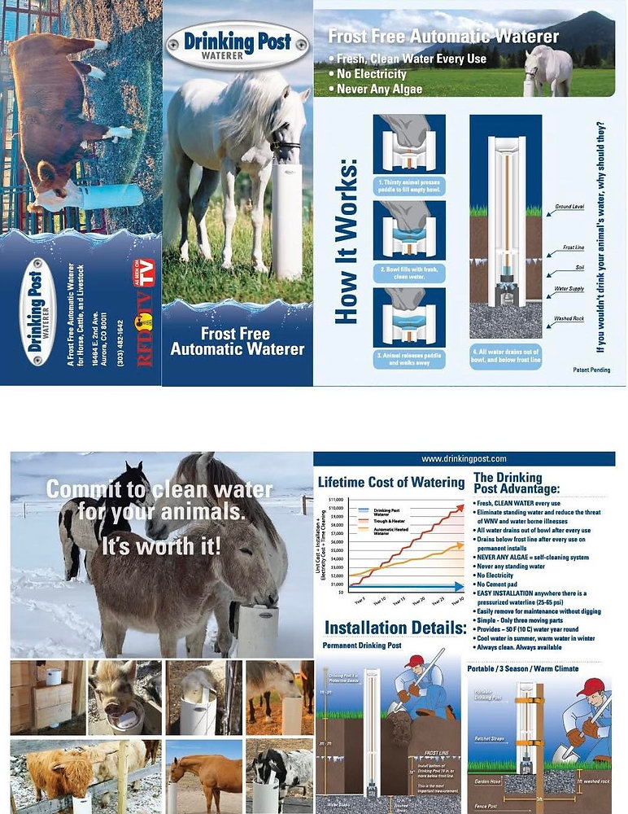

Drinking Post-Frost Free Waterer, $ Saver!
Are you tired of chipping frozen water tanks and hauling water? Drinking Post Waterers are the answer! Providing clean drinking water is essential for the health and wellbeing of animals. With Drinking Post they receive this every time they take a drink and the post's design allows the water to drain out-allowing it to be frost free and prevent it from freezing up in the winter months. There are various sizes for all animals. Other bonus is there is no electricity required! T
Amber Spiegel
Mar 23 1 min read